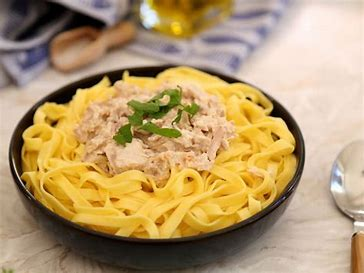

Pâtes au thon
Retour à la page principale

Description
Miam miam j'ai faim
Ingrédients
- 500g de pâtes
- Une boîte de thon
- Un oignon rouge
- Quelques gousses d'ails
- Poivre et sel
Etapes
- Faire bouillir de l'eau avec du gros sel
- Faire cuire les pâtes en remuant de temps en temps
- En même temps, couper le thon en petits morceaux
- Faire cuire à feu doux sur une poêle
- Couper les oignons et l'ail puis les rajouter
- Poivrer et saler